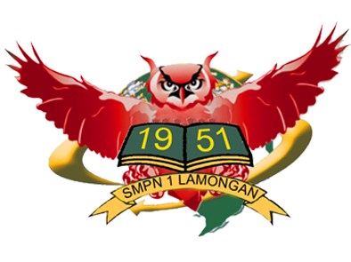
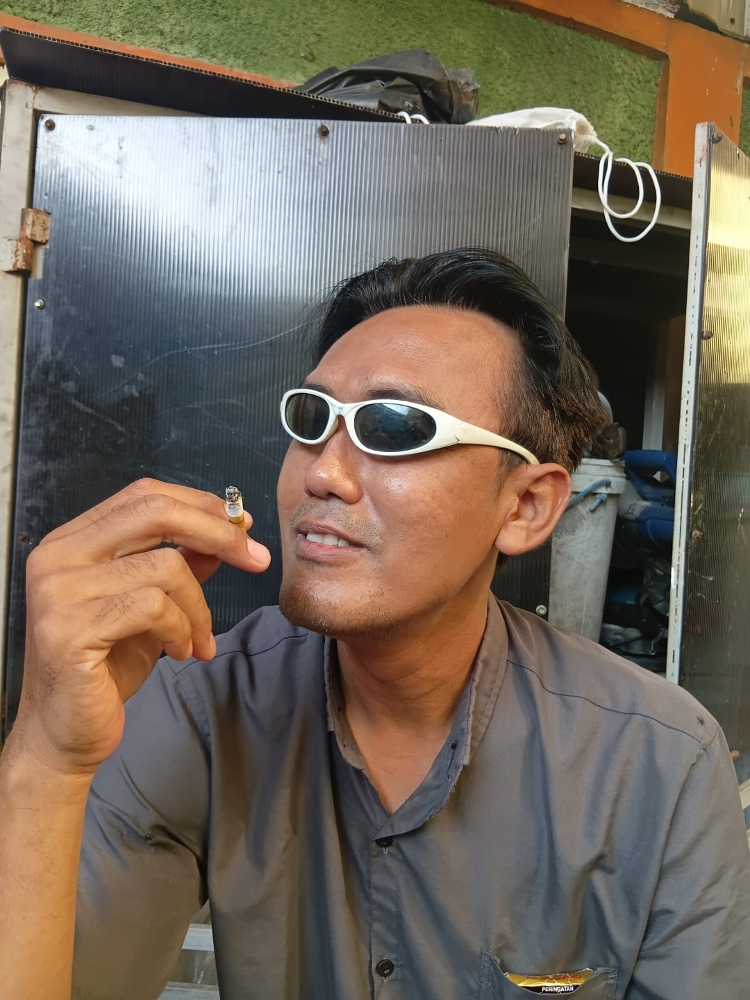

Himpunan adalah kumpulan objek yang jelas batasnya. Digit setiap basis membentuk himpunan tersendiri, sehingga digit di luar himpunan itu tidak sah.
B = {0, 1} · O = {0…7} · H = {0…9, A…F}

Desimal · Biner · Oktal · Heksadesimal
Media Pembelajaran Interaktif — belajar mengubah bilangan antarbasis dengan simulasi langsung
Menjelaskan pengertian himpunan bilangan serta membedakan basis desimal, biner, oktal, dan heksadesimal beserta lambang digitnya.
Menerapkan teknik bagi-sisa untuk mengubah bilangan desimal menjadi biner, oktal, dan heksadesimal dengan tepat.
Menghitung nilai desimal dari bilangan biner, oktal, dan heksadesimal menggunakan bobot posisi digit.
Mengonversi antarbasis secara cepat melalui pengelompokan 3 bit (oktal) dan 4 bit (heksadesimal).
Mengaitkan sistem bilangan biner dengan cara komputer menyimpan data, warna, dan alamat memori.
Menyelesaikan soal konversi secara mandiri maupun berkelompok dengan teliti dan percaya diri.
Profil Pelajar Pancasila: bernalar kritis · mandiri · gotong royong
Himpunan adalah kumpulan objek yang jelas batasnya. Digit setiap basis membentuk himpunan tersendiri, sehingga digit di luar himpunan itu tidak sah.
Sistem sehari-hari dengan sepuluh digit. Nilai tiap digit ditentukan bobot pangkat 10 sesuai posisinya dari kanan.
Hanya mengenal 0 dan 1, mewakili saklar mati dan hidup. Inilah bahasa asli semua perangkat digital.
Memakai digit 0 sampai 7. Satu digit oktal setara tepat tiga digit biner, sehingga penulisan biner jadi lebih ringkas.
Enam belas lambang, dengan A sampai F mewakili 10 sampai 15. Dipakai untuk kode warna dan alamat memori.
Dari desimal: bagi berulang dengan basis, sisanya dibaca dari bawah ke atas. Menuju desimal: kalikan tiap digit dengan bobot posisinya lalu jumlahkan.
Klik satu kartu bilangan di kiri, lalu klik nilai yang sesuai di kanan. Setiap pasangan benar bernilai 10 poin.

“Komputer hanya mengenal nol dan satu. Tugas kita sebagai guru adalah memastikan setiap murid tahu bahwa di balik dua angka sederhana itu tersimpan seluruh dunia digital.”